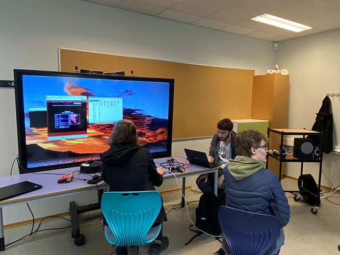
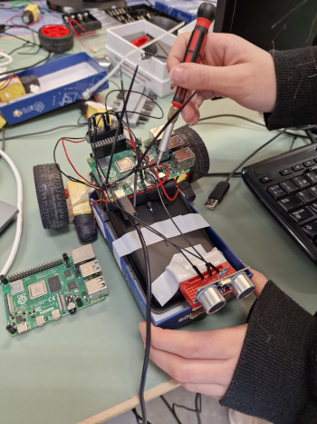

Greenscreen/chroma key er en teknikk innen medieproduksjon hvor en grønn/blå bakgrunn brukes som erstatning til den originale bakgrunnen. Dette oppnås ved å ta video/fotografere noe(n) og deretter bruke et spesielt programvare for å redigere greenscreenen. Denne teknikken brukes i en hel del ulike sammenhenger, slik som film/videoproduksjon, presentasjoner, fotografering, TV-sendinger osv.
Retro spillutvikling refererer til utviklingen av videospill som har et nostalgisk eller gammeldags utseende og spillmekanikk. Dette kan omfatte alt fra 8-biters NES-spill fra 80-tallet til 16-biters Sega Genesis-spill fra 90-tallet. Det er flere grunner til at utviklere velger å lage retrospill. For det første kan retrospill gi en følelse av nostalgi og gjenoppleve spillopplevelsen fra barndommen. For det andre kan retrospill være en måte å utfordre spilldesignere til å lage spill med begrensede ressurser, noe som kan føre til mer kreative og nyskapende spill. En annen grunn til at utviklere velger å lage retrospill er for å appellere til et spesifikt publikum som er interessert i denne typen spill. Retrospill kan være et kultfenomen blant spillentusiaster som liker å samle og spille eldre spill. I dag er det en rekke utviklere som spesialiserer seg på retro spillutvikling. Mange av disse utviklerne lager spill som er tilgjengelige på moderne plattformer som PC, Mac, iOS og Android, slik at de kan nå et bredere publikum.
Robotikk og Raspberry Pi er to områder som kan være svært relevante for hverandre. Raspberry Pi er en liten datamaskin som er spesielt populær blant hobbyister og studenter på grunn av sin fleksibilitet og lave kostnad. Den kan brukes til å kontrollere og automatisere en rekke forskjellige systemer, inkludert roboter.
Robotikk er studiet av design, konstruksjon og operasjon av roboter. Det er et tverrfaglig felt som omfatter maskinteknikk, elektroteknikk, datavitenskap og andre områder. Robotikk er viktig i en rekke applikasjoner, inkludert industriell automatisering, helsevesen, undervisning og underholdning.
Følg oss!!